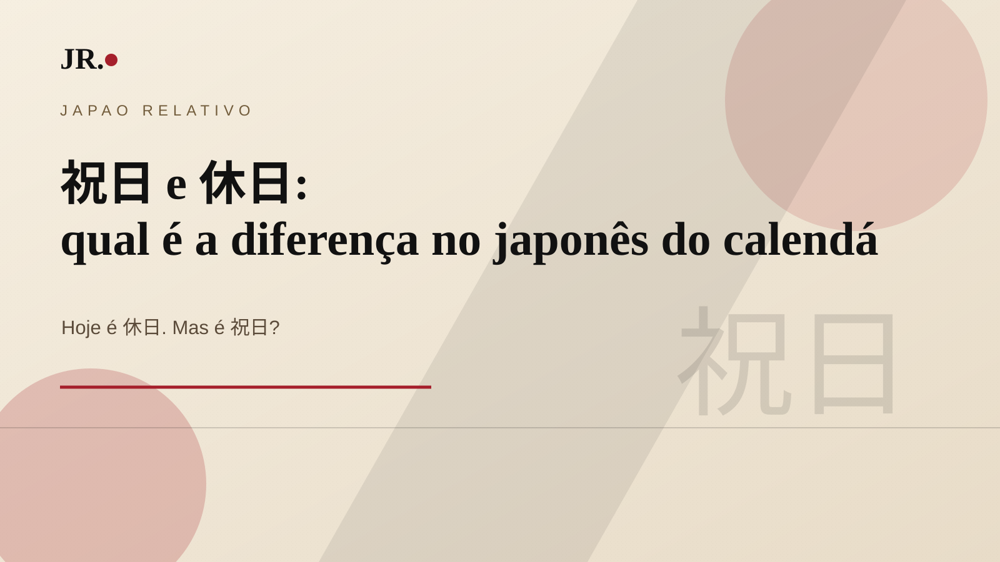

祝日 e 休日 podem aparecer traduzidos como feriado ou dia de descanso, mas não dizem exatamente a mesma coisa. Para ler calendários, avisos de prefeitura e comunicados de trabalho no Japão, a diferença ajuda bastante.

祝日: shukujitsu
祝日（しゅくじつ）é feriado nacional comemorativo. Exemplo: 9月23日は秋分の日です。 23 de setembro é o Dia do Equinócio de Outono.
休日: kyujitsu
休日（きゅうじつ）é dia de descanso. Pode aparecer em contexto oficial de calendário, mas não significa necessariamente que o dia tenha uma celebração própria.
O exemplo de 2026
Em 2026, 21/9 é 敬老の日, 22/9 é 休日 e 23/9 é 秋分の日. O dia 22 vira descanso porque fica entre dois feriados nacionais.
E 休み?
休み（やすみ）é mais amplo e cotidiano: folga, pausa, descanso, ausência ou dia sem aula/trabalho conforme o contexto. Em uma conversa, 明日は休みですか pode significar “amanhã é folga?”.
Frases úteis
- 今日は祝日ですか。 — Hoje é feriado nacional?
- 明日は休みですか。 — Amanhã é folga?
- 9月22日は休日です。 — 22 de setembro é dia de descanso.